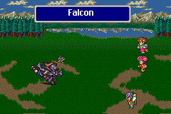

Animal
อาชีพ "Hunter" สามารถเรียกสัตว์ออกมาช่วยต่อสู้ได้โดยการใช้
Ability "Animals"
โดยสัตว์ที่เรียกออกมานั้น ขึ้นอยู่กับ Level ของผู้ใช้
Mysidian Rabbit
(Requirement Level 1)
ไม่มีอะไรเกิดขึ้น : P
Momonga
(Requirement Level 1)
ลดความเร็วของศัตรูลง /All
Bee Swarm
(Requirement Level 6)
Physical Attack /All
Nightingale
(Requirement Level 11)
ฟื้นฟู HP บางส่วนให้แก่สมาชิก /All
Squirrel
(Requirement Level 16)
Physical Attack /Single
Falcon

(Requirement Level 21)
ลด HP ของศัตรูลง 2 ใน 3 /Single
Skunk
(Requirement Level 31)
ทำให้ศัตรูติดสถานะมืดมน (Dark) และติดพิษ (Poison) /All
Wild Boar
(Requirement Level 41)
Physical Attack /Single (รุนแรงมาก) (โจมตีเฉพาะศัตรูที่อยู่บนพื้นดินเท่านั้น)
* Note : ภาพ Wild Boar นำมาจาก http://www.rpgclassics.com/
Unicorn
(Requirement Level 51)
ฟื้นฟู HP และ MP ทั้งหมดให้แก่สมาชิก /All
* Note : ภาพ Unicorn นำมาจาก http://www.rpgclassics.com/